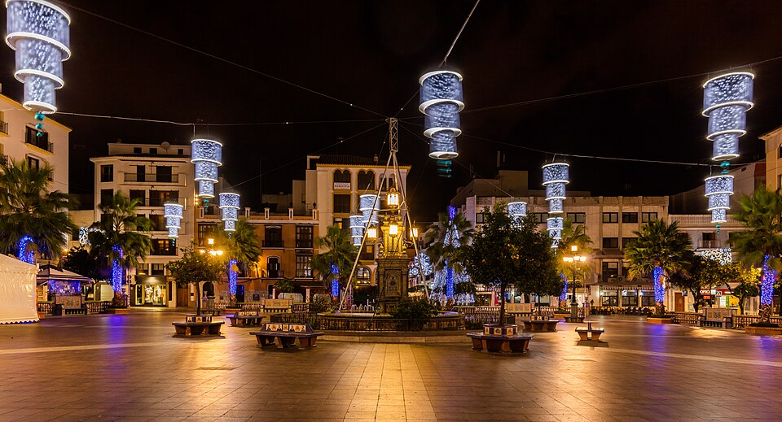
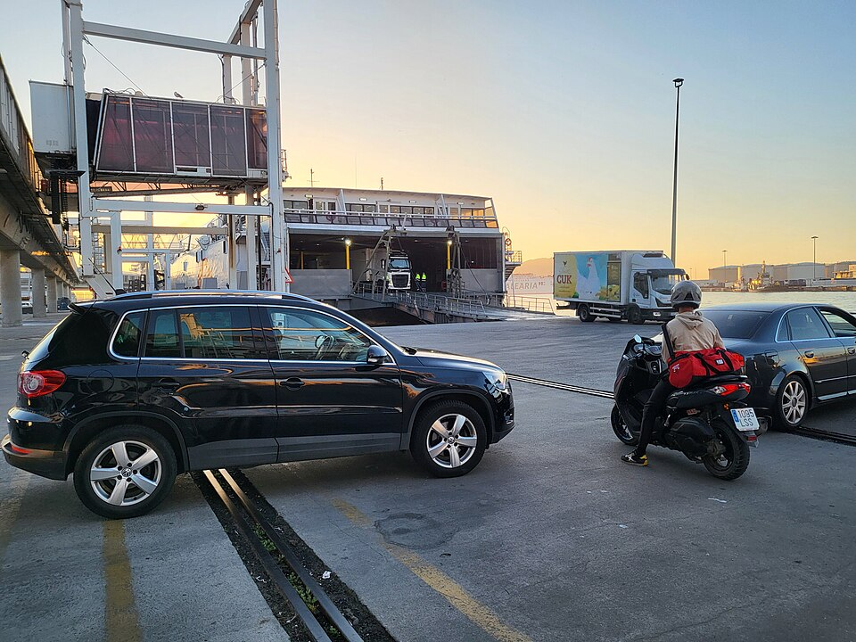
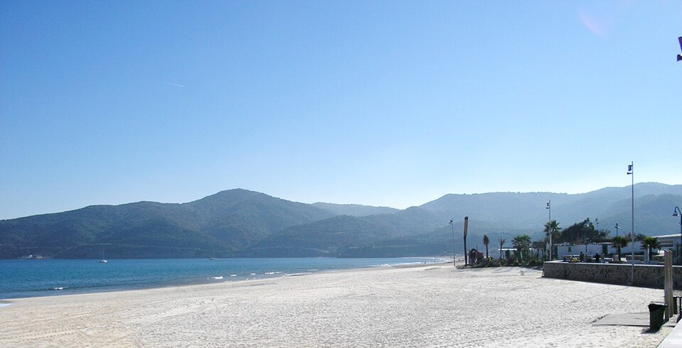
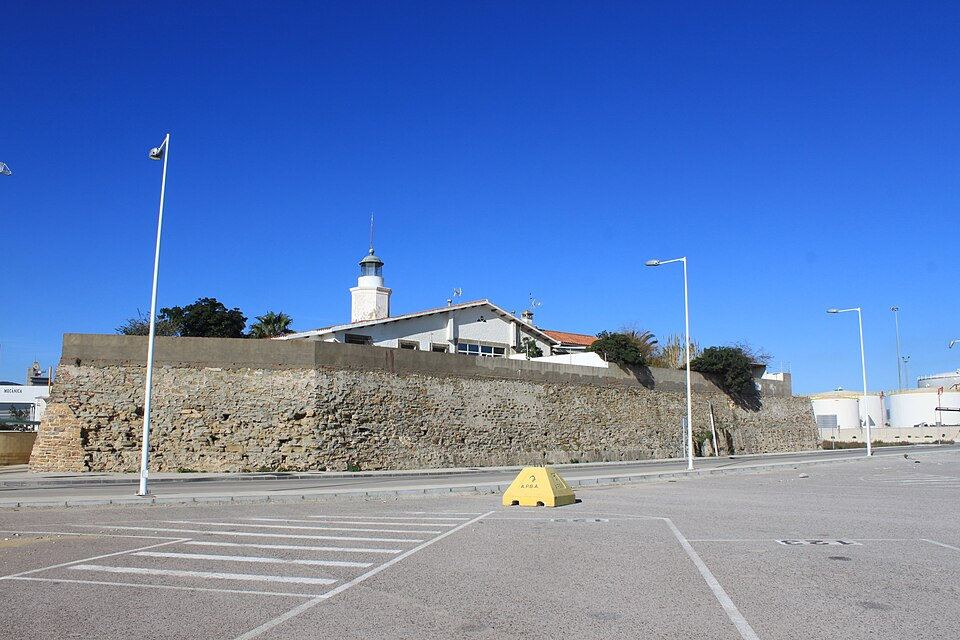
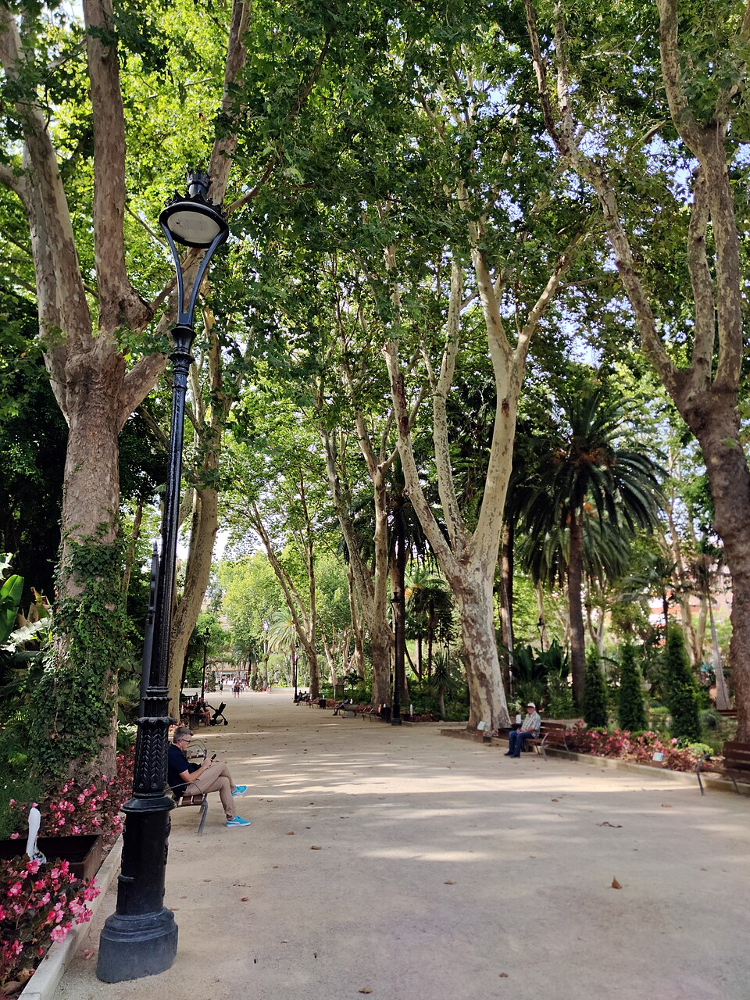
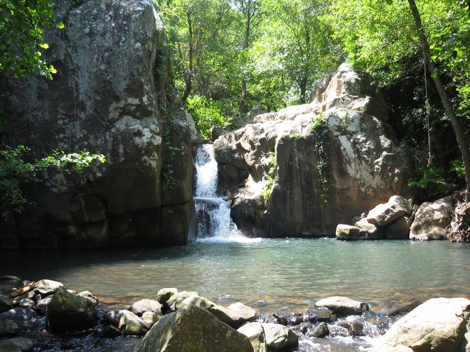

Rincones de Algeciras

Plaza Alta · Foto: Diego Delso (CC BY-SA 4.0)

Puerto de Algeciras · Foto: Xemenendura (CC BY-SA 4.0)

Playa de Getares · Foto: Falconaumanni (CC BY-SA 3.0)

Fuerte de Isla Verde · Foto: Falconaumanni (CC BY-SA 3.0)

Parque María Cristina · Foto: Falconaumanni (CC BY 4.0)

Río de la Miel · Foto: Antonio M. Romero Dorado (dominio público)